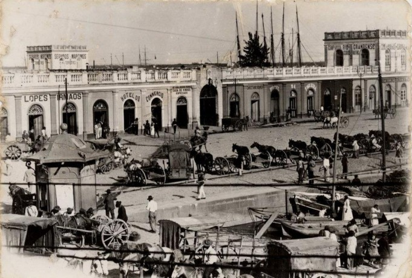
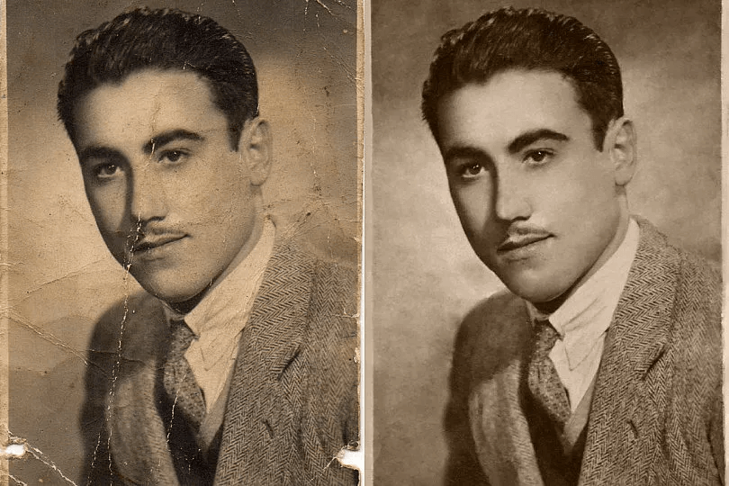
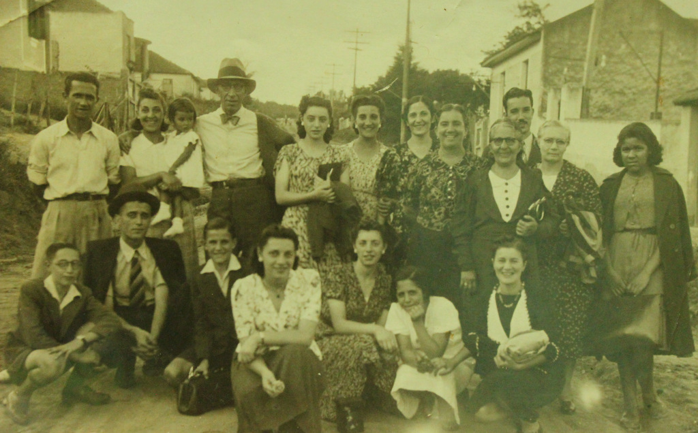

Somos uma família de 5 irmãos, criados na cidade São Mateus, em São Paulo. Fomos criados na simplicidade, sabendo o
valor do trabalho duro que o nosso pai exercia. Ele sempre foi muito esforçado, trabalhando muito mais do que
deveria, para nos manter em uma qualidade de vida.
Nosso pai, sempre teve sua sapataria. Desde 1990 ele fundou ela na garagem de casa, ia trabalhando aos pouquinhos
sempre para melhorá-la... uma prateleira aqui, uma estante ali... sempre buscando o melhor para seus clientes.

Com o passar dos anos, passamos a auxiliá-lo em seus serviços pois a demanda foi crescendo. Da garagem de casa, ele
alugou um ponto na rua de cima e começou a divulgar seu trabalho com placas e alguns panfletos. Por vol dos anos
2000, a sapataria era um sucesso e todos da região levava seus sapatos para que nosso pai arrumasse. As pessoas
prezavam por seus bens materiais e confiavam em nosso trabalho.


Porém, de acordo com o crescimento das lojas e das grandes marcas, as pessoas passaram a optar por comprar coisas
novas e passamos a ter um pouco de dificuldade nas vendas... com o passar dos anos, perdemos alguns clientes e as
coisas dificultaram um pouco, porém não desanimamos. Fomos trazendo novas tecnologias para a sapataria e fazendo
alguns investimentos e, agora, com o conhecimento e experiência que nosso pai tem, conseguimos iniciar nossa própria
linha de produtos que vem de origem de materiais restaurados, conforme apresentada no catálogo da home.
Apesar de hoje, o senhor Ronaldo estar com 65 anos, ele ainda é muito ativo na loja, sempre passando sua
experiência para os novos funcionários que contratamos.